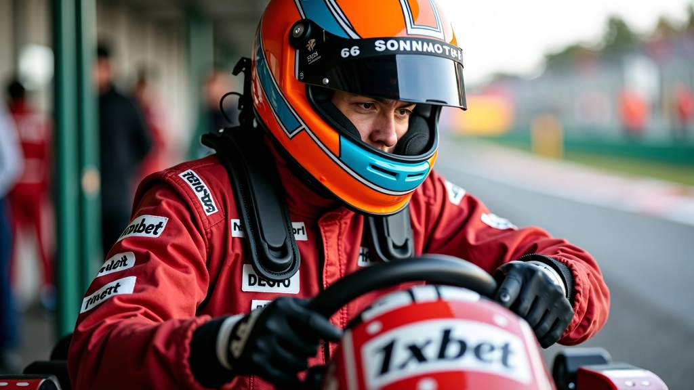

تقنية الانطلاقة الثابتة من خط البداية
نحن متخصصون في تعليم أساليب الانطلاق المثالية في الكارتينج منذ 2020. جريد الانطلاق للتقنيات المتقدمة يقدم محتوى عملي وشامل يساعدك على إتقان كل جوانب بدء السباق من خط الشروق.
ركائز الانطلاقة القوية
الانطلاقة الناجحة لا تحدث بالصدفة. إنها نتيجة تنسيق مثالي بين التركيز الذهني والإعداد الفني والتنفيذ الحاسم. نحن نركز على كل عنصر يساهم في انطلاقتك من خط البداية.
التركيز البصري
اتقان فن القراءة الصحيحة للضوء والإشارات. يجب أن تعرف بالضبط متى تبدأ الحركة، وكيف تتنبأ باللحظة المثالية قبل إطلاق الإشارة بأجزاء من الثانية.
المحاذاة الميكانيكية
وضع الكارت، موقع الجسد على المقعد، وضع اليدين على المقود. كل تفصيلة تؤثر على السرعة التي تحقق عند الانطلاق. التفاصيل الصغيرة تحدث الفرق الكبير.
رد الفعل الحاسم
السرعة والدقة في استجابتك للإشارة. يجب أن تكون قادراً على التحرك بلا تأخير، مع الحفاظ على التحكم الكامل بالكارت والاتجاه الصحيح.
مسار الإتقان التدريجي
لا يمكنك القفز مباشرة إلى الانطلاقات الحرفية. جريد الانطلاق للتقنيات المتقدمة يرشدك عبر مراحل تطور منطقية، حيث تبني مهاراتك بشكل متدرج وآمن.
فهم الأساسيات النظرية
نبدأ بشرح تفصيلي لكيفية عمل نظام الإشارات، وكيفية توقيت الانطلاقة، وما هي الأخطاء الشائعة التي يرتكبها المبتدئون. المعرفة هي أساس كل شيء.
التدريب على الانطلاقات البطيئة
تمارين تركيز على الحركات الصحيحة في سرعات منخفضة. تعلم كيفية استشعار الكارت، وكيف تتحرك العجلات، وكيفية الحفاظ على الاتجاه السليم قبل أن تزيد السرعة.
تطوير رد الفعل السريع
تمارين متقدمة لتحسين وقت استجابتك. نستخدم تقنيات علمية مثبتة لزيادة سرعة رد الفعل مع الحفاظ على الدقة والتحكم الكامل.
السباقات التجريبية والتقييم
الآن تطبق كل ما تعلمته في بيئة حقيقية. نقيّم أدائك بموضوعية، ونحدد نقاط القوة والضعف، ونعطيك توصيات محددة للتحسين المستمر.
قيمنا والتزامنا
جريد الانطلاق للتقنيات المتقدمة موجودة منذ 2020 لتحقيق هدف واحد: مساعدة سائقي الكارتينج على فهم وإتقان تقنية الانطلاقة من خط البداية. نحن نؤمن بأن كل شخص يمكنه أن يتحسن.
الوضوح والدقة
نحن لا نعقد الأمور. كل شيء نشرحه محدد وعملي. الشرح الواضح يعني أن تفهم فوراً، بدون التباس أو غموض.
التعليم المستمر
الرياضة تتطور باستمرار. نحن نتابع أحدث الأبحاث والتقنيات، ونحدّث محتوانا بانتظام حتى تحصل على أفضل المعلومات.
الشفافية الكاملة
نخبرك بالحقيقة، سواء كانت سهلة أو صعبة. لا نخفي المراحل الصعبة أو نعد بنتائج غير واقعية.
الدعم المتواصل
لست وحدك في هذه الرحلة. نحن هنا لنجيب على أسئلتك، نناقش تحدياتك، ونساعدك على التغلب على العقبات.
الشغف بالتميز
نحب هذه الرياضة. شغفنا بها هو الذي يدفعنا لتقديم محتوى عالي الجودة يستحق وقتك واهتمامك.
التطور المقاس
نحن نركز على التحسن الملموس. كل تمرين وكل نصيحة لها غاية واضحة: أن تصبح أفضل بشكل حقيقي.
كيف نعمل بفعالية
جريد الانطلاق للتقنيات المتقدمة لا تعتمد على الحظ أو الموهبة الفطرية وحدها. نحن نعتقد أن الانطلاقة الناجحة هي مزيج من الفهم العميق والممارسة المنظمة والتقييم الدقيق.

عندما تبدأ معنا، أنت لا تحصل فقط على قائمة من النصائح. بدلاً من ذلك، تتلقى نظام متكامل يغطي كل شيء. نشرح لك الأساس العلمي والفني. نوفر لك تمارين عملية يمكنك تطبيقها فوراً. ننقدك بصراحة وإنصاف، ونعطيك خطوات واضحة للتحسن.
ما يميز جريد الانطلاق للتقنيات المتقدمة هو أننا لا نتوقف عند الشرح. نحن نتابع معك التقدم، نناقش الصعوبات التي تواجهها، ونكيف نصائحنا بناءً على تطورك الفعلي. الانطلاقة من خط البداية ليست مهارة ثابتة — إنها رحلة تطور مستمر، وأنت لست وحدك فيها.
معلومة مهمة
المحتوى المقدم على هذا الموقع مخصص للأغراض التعليمية والمعلوماتية فقط. إنه يعكس معرفتنا والممارسات الشائعة في رياضة الكارتينج، لكن كل فرد يختلف في قدراته وظروفه. نتائج التدريب والممارسة تعتمد على عوامل عديدة منها الاهتمام الشخصي والخبرة السابقة والظروف البدنية والمحيط. ننصح بطلب التوجيه من مدربين محترفين مرخصين عند بدء أي برنامج تدريبي جديد، خاصة في الأنشطة التي تنطوي على مخاطر. جريد الانطلاق للتقنيات المتقدمة ملتزمة بتقديم معلومات دقيقة وموثوقة، وتحرص على تحديث المحتوى بانتظام.